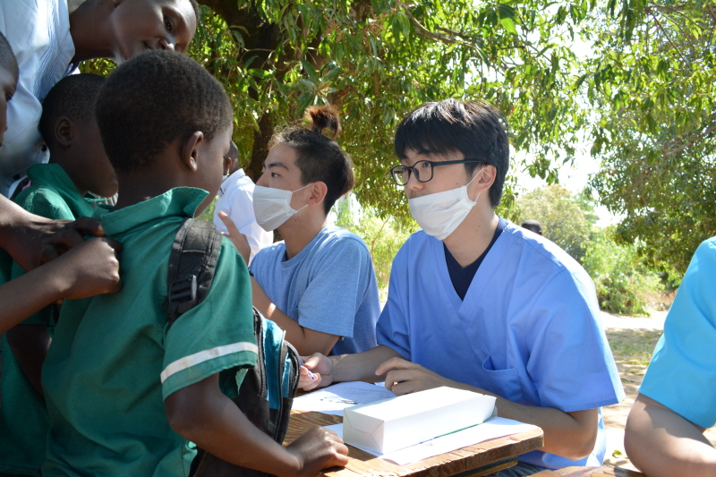
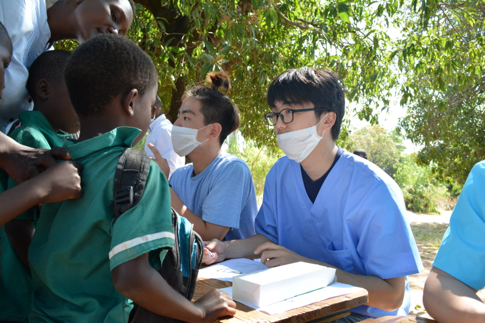

Vertical...
Top tile
미국 의대진학 어렵지만은 않다!
매년 약 5만 3천명의 지원자가 미국 의대를 지원하고 있다.
그 중 약 2만 천명 정도는 어느 의대이든 합격을 하게 된다.
전체 지원자 중 약 40 %가 의대 진학에 성공 한다면
의대 준비 해 볼만한 일이다.
만일, Johns Hopkins 와 같은
특정 의대에 꼭 가겠다고 하면 합격률은 2-3%, 하늘의 별따기 처럼 어려워 진다.
그러나 미국에서 의사가 되겠다는 꿈을 갖고 노력하면 어려운 일은 아니다.
의대를 준비하고 있는 PreMed 과정의 학생이라면 학부학점 (GPA), MCAT 점수, 리서치 경험 및 결과, 봉사활동 그리고 Healthcare 와 Clinical Experience 가 균형 있게 갖추어져야 한다. 만일 이 가운데 한 가지라도 부족하게 되면 의대 진학이 늦어질 수 있다. GPA가 아주 낮아도 의사가 되고자 하는 의지만 있다면 포기할 필요는 없다. 시간이 좀 더 걸릴 뿐이다.
STEM RI Consulting Group과 함께하면 불가능한 것은 아니다.
중앙일보 ‘폴 정 박사의 미국의대 진학 가이드’ 중에서
Vertical...
Top tile
...tiles
Bottom tile
Middle tile
With an image

Wide tile
Aligned with the right tile
Tall tile
With even more content
Extra-Activities 봉사활동은 의대 진학에 얼마 만큼의 비중이 있는가? 의대 진학에 봉사활동이 필요한가? 대답은 반드시 ‘해야한다’ 이다. 저학년 때부터 꾸준한 봉사와 병원에서의 인턴십을 하면서 의대 진학을 준비한 학생들 가운데 일부가 비록 학점이 낮아도 의대 진학에 성공하는 경우를 종종 보아 왔다. 또한 의료봉사가 아니더라도 한가지 봉사 프로젝트를 오랫동안 꾸준히 리더십 포지션을 갖고 하는 것이 중요하다. 의대 입학한 학생들이 능력을 보여준 활동의 예 1. 제 3세계의 비영리재단에서의 인턴십 2. 리서치, 데이타 분석 과 컴퓨터 코드 작성 3. Global health experience 4. EMT 5. Program Administrator 6. Language Instructor
15
Nov
John Smith @johnsmith 31m
Located at Mosaic District, Fairfax VA
15
Nov
John Smith @johnsmith 31m
Located at Mosaic District, Fairfax VA
25
Nov
John Smith @johnsmith 31m
Located at Mosaic District, Fairfax VA
15
Nov
John Smith @johnsmith 31m
Located at Mosaic District, Fairfax VA
15
Nov
John Smith @johnsmith 31m
Located at Mosaic District, Fairfax VA
15
Nov
John Smith @johnsmith 31m
Located at Mosaic District, Fairfax VA

 
